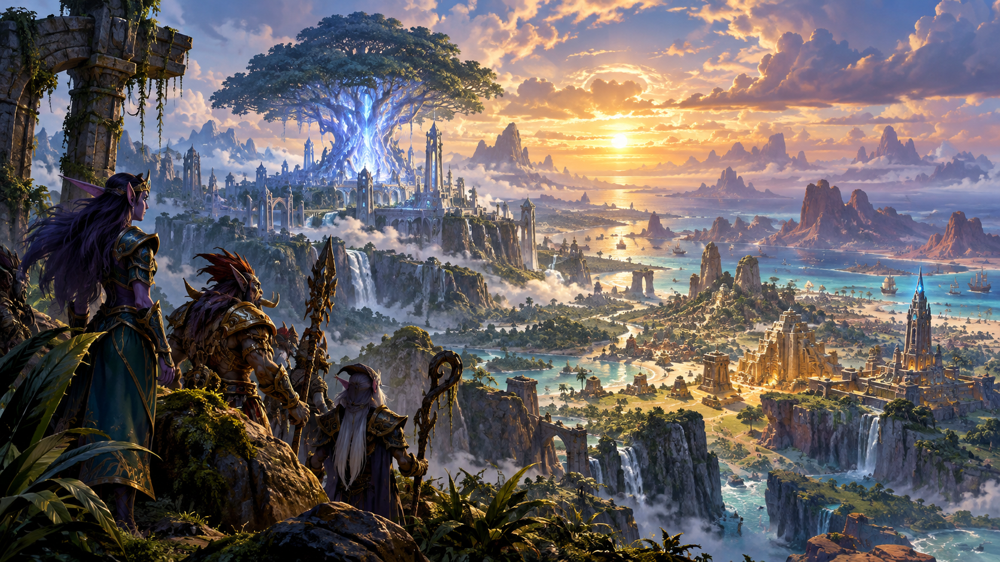

ARCHIVES DE WARCRAFT · DOSSIER 001
AZEROTH ET SES ORIGINES
Bien avant la Horde et l’Alliance, avant les royaumes humains et les grandes guerres, Azeroth était déjà au cœur d’un conflit entre puissances cosmiques. Explorez huit chapitres pour découvrir les fondations de cet univers.

La naissance d’Azeroth
Un monde au destin exceptionnel
Dans l’immensité du Grand Au-delà obscur, les mondes naissent, changent et parfois disparaissent sans laisser de traces. Azeroth, pourtant, n’est pas une planète ordinaire. Elle abrite une âme-monde : une conscience titanesque dont l’éveil pourrait bouleverser l’équilibre des puissances cosmiques.
Cette âme-monde demeure longtemps endormie, tandis que la surface de la planète traverse des âges dont les peuples mortels n’ont conservé aucun souvenir. Bien avant les royaumes humains, les clans orcs ou les cités elfiques, l’histoire d’Azeroth se joue déjà à une échelle vertigineuse.
Cette particularité explique pourquoi des êtres aussi différents que les Titans et les serviteurs du Vide s’intéressent à elle. Derrière les conflits familiers de Warcraft se cache donc une question beaucoup plus ancienne : quel avenir attend l’âme d’Azeroth ?
Les forces cosmiques
Six influences sur la création

Dans la cosmologie de Warcraft, six grandes forces structurent l’univers : la Lumière, le Vide, l’Ordre, le Désordre, la Vie et la Mort. Chacune possède ses manifestations, ses domaines et des êtres capables d’en canaliser l’énergie.
La Lumière inspire la foi et la guérison, tandis que le Vide se manifeste notamment par les murmures et les visions de possibles futurs. L’Ordre est associé à la magie arcanique et à l’œuvre des Titans ; le Désordre, aux puissances gangrenées. La Vie et la Mort influencent à leur tour la croissance, les esprits et les royaumes de l’au-delà.
Il serait pourtant trompeur de réduire toutes ces forces à une opposition simple entre héros et méchants. Leurs représentants poursuivent parfois des objectifs contradictoires, et leurs interventions peuvent menacer ceux qu’ils prétendent protéger. Azeroth devient un point de rencontre de ces ambitions.
Les Dieux très anciens
Les murmures venus du Vide

Bien avant l’apparition des grandes nations, des entités liées au Vide s’enracinent sur Azeroth. Les Dieux très anciens — notamment C’Thun, Yogg-Saron, N’Zoth et Y’Shaarj — étendent leur influence à travers la planète.
Leur pouvoir ne repose pas seulement sur des armées. Ils altèrent les esprits, façonnent des serviteurs et installent une corruption durable. Les traces de leur présence resurgiront bien des millénaires plus tard, jusque dans les aventures des héros modernes.
Leur objectif est étroitement lié à l’âme-monde d’Azeroth. En la soumettant à l’influence du Vide, ils pourraient changer le destin même de la planète. C’est cette menace qui attire l’attention des Titans et de leurs serviteurs.
L’Empire noir
Un âge oublié sous la domination des Dieux très anciens
Sous le règne des Dieux très anciens s’étend l’Empire noir, une civilisation ancienne dont les structures et les serviteurs ne ressemblent guère aux royaumes actuels. Des créatures comme les aqir et les n’raqi participent à cette domination.
L’Empire noir ne correspond pas à un pays unique doté de frontières modernes. Il désigne plutôt une époque où les puissances du Vide et leurs armées exercent une emprise immense sur Azeroth. Les forces élémentaires jouent également un rôle important dans ce monde primitif.
Des ruines et des menaces issues de cet âge traversent le temps. Lorsque les aventuriers explorent certains temples oubliés, ils découvrent les vestiges d’une histoire antérieure à presque tout ce que racontent les chroniques mortelles.
L’arrivée des Titans
Le Panthéon face à une planète menacée

Les Titans sont des êtres cosmiques liés à l’Ordre. En découvrant Azeroth, le Panthéon comprend que son âme-monde est menacée par les Dieux très anciens. Protéger la planète devient une mission essentielle.
Mais les ennemis sont profondément implantés dans le monde. Selon les récits des chroniques titanesques, l’arrachement d’Y’Shaarj cause une blessure terrible à la surface d’Azeroth. Cette catastrophe révèle qu’une intervention directe risque d’endommager l’âme-monde qu’ils veulent sauver.
Les Titans choisissent alors de confier une grande partie de leur œuvre à des serviteurs plus adaptés. Ce tournant explique l’apparition des Gardiens et d’immenses installations destinées à surveiller et à organiser Azeroth.
Les Gardiens d’Azeroth
Les architectes de l’Ordre

Pour agir sur Azeroth sans exposer davantage son âme-monde, les Titans investissent des Gardiens de pouvoirs considérables. Tyr, Odyn, Freya, Mimiron et d’autres dirigent des créations forgées par les Titans.
Leurs forces combattent les armées de l’Empire noir et enferment plusieurs Dieux très anciens. Elles érigent aussi des installations monumentales, parmi lesquelles Ulduar, qui témoignent de la volonté titanesque d’organiser et de protéger le monde.
Les Gardiens ne sont cependant ni omniscients ni invulnérables à la corruption. Leurs désaccords et leurs échecs auront des conséquences profondes. Bien des énigmes rencontrées dans World of Warcraft remontent à leurs décisions.
Le Puits d’éternité
La magie au cœur du monde

La blessure laissée par l’arrachement d’Y’Shaarj est stabilisée, donnant naissance au Puits d’éternité, une source d’énergie arcanique extraordinaire. Cette puissance jouera un rôle central dans l’histoire d’Azeroth.
Bien plus tard, des trolls sombres vivant à proximité du Puits qui évolueront progressivement pour devenir les premiers elfes de la nuit. Leur civilisation finira par s’épanouir autour de cette magie, jusqu’à l’avènement de l’empire de la reine Azshara.
L’histoire du Puits annonce déjà un autre grand drame : la Guerre des Anciens. L’usage de ses énergies attirera la Légion ardente, et les événements qui suivront transformeront profondément la géographie du monde.
L’éveil des civilisations
Des empires anciens aux peuples familiers

Après les conflits primordiaux, les peuples d’Azeroth se développent au fil des millénaires. Les trolls bâtissent de vastes empires ; les elfes de la nuit construisent une civilisation puissante autour du Puits d’éternité.
D’autres lignées sont liées aux créations des Titans et aux transformations qui les affectent. Les origines de nombreux peuples ne peuvent se comprendre sans remonter aux Gardiens, aux malédictions anciennes et aux forces qui ont remodelé la planète.
Peu à peu se dessine l’Azeroth des récits plus familiers. Il reste encore des millénaires avant la Porte des ténèbres, l’arrivée des orcs et les guerres racontées dans Warcraft I, II et III. Mais les fondations de ces histoires sont déjà en place.
Illustrations Warcraft issues de sources externes ; leur affichage nécessite une connexion et dépend de la disponibilité des sites sources. Visuels © leurs ayants droit.
← RETOUR À WARCRAFT